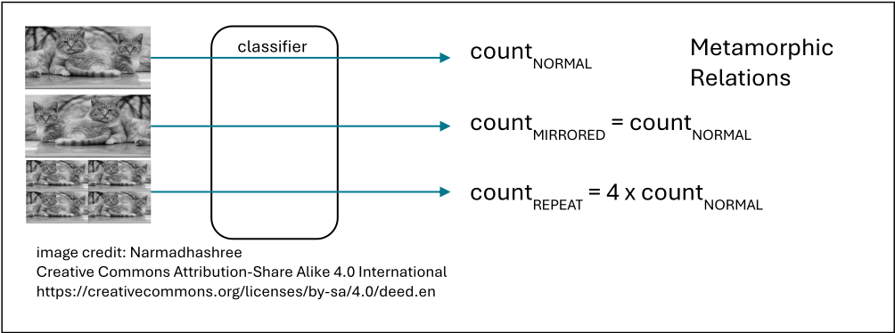
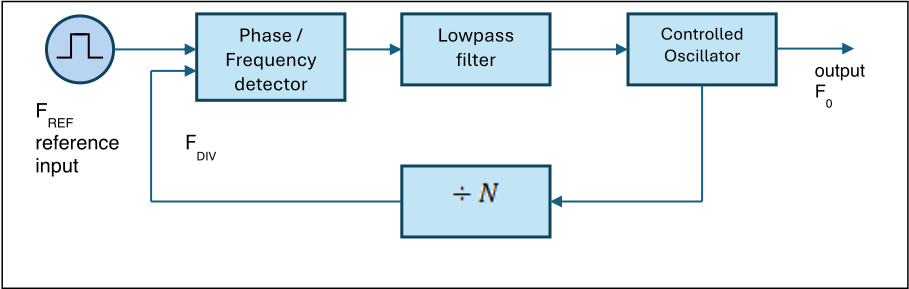
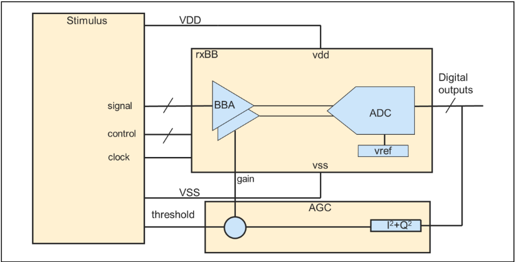
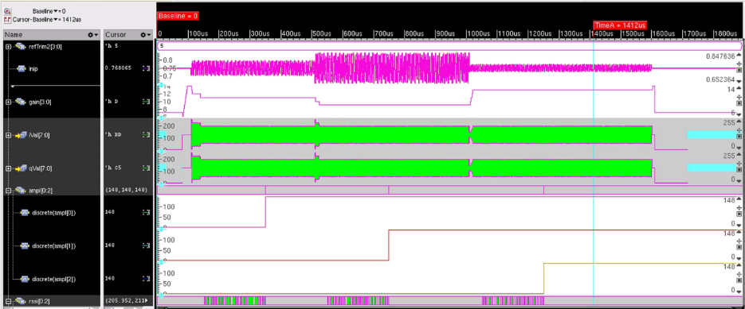
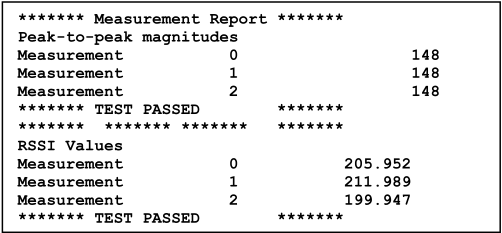

Metamorphic Testing（蜕变测试）在基于行为模型的混合信号系统中的应用
混合信号系统仿真中，模拟部分通常用行为模型表示以保住仿真性能，而 UVM 建议的 BFM 测试 oracle 难以构建：为行为模型再建 BFM 既需重复建模、拖慢仿真，又因 BFM 响应必然与被验证器件一致而使真实系统功能未被真正检查。论文引入源自软件测试领域的 Metamorphic Testing，不再验证输出的绝对正确值，而是断言成对测试之间必须成立的蜕变关系（MR）。演示对象是一个用 SystemVerilog real 数行为建模的接收基带子系统（数字控制增益/滤波的 I/Q 放大器、交织采样的 SAR ADC、数字 AGC 闭环），通过约束随机正弦激励依次施加 1X/2X/0.5X 幅度变化，由测量模块检查 ADC 输出峰峰值恒定、RSSI 随输入 ±6dB 变化等 4 条 MR，仿真全部通过。论文还展示 MR 可写成 assertion、配合 covergroup 监测覆盖并兼容 UVM，同时明确指出 MR 的提炼没有算法化方法、依赖领域专家，且仅在特定输入范围与假设下有效。
在混合信号系统仿真验证中，模拟组件以行为模型表示以维持仿真性能；UVM 建议用 BFM 作为 test oracle 检查系统响应，但对复杂混合信号系统而言，构建 BFM 往往意味着对验证所用行为模型的重复迭代，除降低仿真性能（需仿真两份模型实例）外，还因 BFM 响应必然与被验证器件一致而使真实系统功能处于未验证状态。论文要解决的问题是：在无法构建可靠 test oracle 的情况下，如何对这类混合信号子系统进行有效的自动化验证。
核心方法是 Metamorphic Testing：识别被测模块在不同输入及其对应输出之间必须保持的蜕变关系（Metamorphic Relations, MR），测试只断言关系成立，无需知道 f(x) 等输出的绝对正确值。论文将该范式应用于一个接收基带子系统：模拟 I/Q 基带放大器（数字控制增益与滤波）、交织采样 I/Q 的 SAR ADC（含数字控制参考电压发生器设定中心点与 LSB size）、以及计算 I2+Q2 幅度并回控模拟增益以最大化 ADC 动态范围的数字 AGC（同时输出 RSSI），模拟功能用 SystemVerilog real 数行为模型表示。针对该子系统识别出 4 条 MR：AGC 动作应使 ADC 输出峰峰值保持恒定（MR1/MR3）；RSSI 计算应计入增益修正、随输入 ±6dB 变化（MR2/MR4）。激励侧用 SystemVerilog class 约束随机化幅度、频率与 LSB trim 参考值，以 $sin()/$cos() 生成 I/Q 正弦并按 40ns strobe 采样，依次施加 1X、2X、0.5X 幅度；测量模块提取 ADC 输出峰峰值（LSB 数）与 RSSI 滑动平均并存入数组，最后由 task 比较 MR 并输出 pass/fail 报告（论文指出也可改写为 SystemVerilog assertion），并用 covergroup 监测设计工作空间覆盖，整体与 UVM 构造兼容。
演示仿真中，输入幅度依次为 1X/2X/0.5X 时，AGC 收敛后三组 ADC 输出峰峰值测量完全一致（波形图 1412us 处三个测量值均为 148），MR1/MR3 通过
RSSI 测量 1 与 2 相对测量 0 分别为 +6dB 与 -6dB（判定窗口为 5.5–6.5 dB），MR2/MR4 通过
论文引用的先前 PLL 工作 [4] 中，当两测试参考频率比 C=1.01 时 PLL 锁定到 FREF 的极低次 subharmonic，据此定位出 phase-frequency detector 的 dead-zone bug，证明了该方法的工程价值
论文未报告覆盖率提升幅度、bug 检出率或回归规模等更广泛的量化指标（未在论文中说明）
相对已有工作的区别：将 metamorphic testing 从软件测试领域及先前的工业 PLL 子系统案例（引用 [4]）扩展到另一类混合信号子系统——含 AGC 反馈闭环的复杂模数交互，并采用 SystemVerilog real 数行为建模实现；展示了与 SystemVerilog 内建验证机制（约束随机激励、coverage、assertion、UVM）的完整集成，给出可复用的模板并公开演示文件下载。与传统 oracle/scoreboard 方法的本质区别在于：MR 检查不要求已知正确输出值，从而绕开了 BFM/reference model 构建的两难。
相关度级别：medium
命中能力域：2.4 设计验证方法学
理由：论文直接属于 2.4 设计验证方法学范畴：其技术手段（SystemVerilog 约束随机激励、covergroup 覆盖、assertion、UVM 兼容的 testbench 构造）与团队验证栈一致，且提供了一种在缺乏 test oracle 时的 oracle-free 检查范式。但论文的应用场景是混合信号子系统（ADC/AGC/PLL 基带接收链路），而团队主流的 LPDDR/DDR5/MRDIMM/HBM4/UCIe 数字协议与控制器验证通常有协议 VIP/reference model 作为 oracle，'无 oracle' 痛点主要出现在 PHY 侧模拟/混合信号模块（PLL、DLL、CDR、基于 ADC 的均衡与校准电路）或 reference model 代价过高的场合。因此该方法对团队是有借鉴价值的补充范式，尤其对含模拟行为模型的 PHY 验证，但不直接命中团队主流数字验证流程，评为 medium。
建议动作：作为方法参考存档
Daniel Cross Cadence Design Systems +1-512-342-5560 12301 Research Blvd Ste 200 Austin, TX 78759 danielcr@cadence.com
摘要——蜕变测试（Metamorphic Testing）是一种源自软件测试领域的方法学，可用于对不存在良好测试预言（test oracle）的模块进行测试。本文对蜕变测试进行了概述，并给出源自软件测试的示例。随后，描述了将蜕变测试应用于一个采用 SystemVerilog real 构造建模的混合信号子系统的实例。文中给出了仿真结果，展示了对该混合信号系统进行的蜕变测试。本演示旨在介绍蜕变测试的概念，并鼓励其在混合信号验证中的应用。
A common testing methodology for new software modules is to present the module with a variety of inputs and verify that the module produces the correct or expected outputs in response. The resource relied upon to determine the correct or expected outputs is known as a test oracle [1]. Construction of a proper test oracle can sometimes be a time consuming, expensive, or ultimately impossible task. In these cases, a different testing methodology is needed. To help address this need, the use of metamorphic testing in the software realm was introduced over 20 years ago [1]. This method employs the identification of metamorphic relations between different inputs and their corresponding outputs that must be maintained by the module under test if it is to perform its intended function. As a simple example, assume a module that produces output f(x) in response to input x , f(y) in response to input y , and f(x+y) in response to x+y . an example of a metamorphic relation (MR) for this module might be f(x+y) = f(x)+f(y) . A metamorphic test will simply assert that the relationship is true. Note that no knowledge of whether f(x) , f(y) , or f(x+y) are the correct outputs for their respective inputs x , y , and x+y is required. A more concrete example (see [1]) might apply to a cryptographic application requiring math operations on very large numbers, for which existing math functions are unreliable. Custom functions written for the application must be tested, but any existing function that might be reliably used as a test oracle would be a perfect candidate to use in the application, and then testing would not be required. In the absence of a test oracle, metamorphic testing might be used as follows. e x Once
Assume a math function is required to calculate the value of . A MR for this function is 𝑒 𝑥 × 𝑒 𝑥 = 𝑒 2 𝑥 . again, knowledge of the actual correct value of 𝑒 𝑥 is not required .
A more complex example of metamorphic testing from the realm of machine learning applications ([2], [3]) is as follows. Suppose the unit under test is an image classifier that counts the number of cats in an input image, as illustrated in Figure 1. If the input image is mirrored, the number of cats detected should be the same, therefore a metamorphic relation for a pair of tests on an image and a mirrored copy is countMIRRORED=countNORMAL. Similarly, if the input image is composed of four copies of the original image, the number of cats detected should be multiplied by four. Thus, the metamorphic relation for this pair of tests is countREPEAT=4 x countNORMAL. No prior knowledge of the number of cats pictured is required for this type of testing. Construction of a traditional test oracle would require humans to manually count and classify all of the test images, a labor-intensive task. Metamorphic testing provides a reliable means of unit testing without preliminary classification of the test data by humans.

For integrated circuit verification, the Universal Verification Methodology (UVM) suggests that a Bus Functional Model (BFM) of the device should be used as a test oracle to check the system response to a stimulus. However, when verifying a complex mixed signal system the analog system components are often represented by behavioral models for simulation performance; and generation of a BFM would often necessitate reiteration of the models used for verification. In addition to compromising simulation performance (because of the need to simulate two instances of every model), this would reduce confidence in the verification results - since the BFM response will always match that of the device under verification and actual system function is left unverified. Metamorphic testing offers a way out of this conundrum.
As an example, refer to [4] in which the authors apply metamorphic testing principles to verification simulations of an industrial Phase-Locked Loop (PLL) subsystem, pictured in Figure 2. Rather than trying to determine the proper response to every input, they identify eight MRs that must be met for the PLL to properly function. One of these MRs states that if two similar tests are performed with reference frequencies related by a constant C that is close to unity, then the locked frequencies of the two tests should also be related by that same constant. More succinctly,
The authors in [4] found that when C = 1.01, the PLL frequency locked to a very low subharmonic of FREF. They investigated and found a dead-zone bug in the phase-frequency detector. This reported result demonstrates the applicability of metamorphic testing to mixed-signal hardware verification.
本工作将这一应用扩展到另一种类型的混合信号子系统，其中使用 SystemVerilog 实数建模（real number modeling）来表示模拟功能，从而对复杂的模拟-数字交互进行验证。该演示的基础采用来自无线电收发机的接收基带级、模数转换器（ADC），以及作用于转换后数字信号的自动增益控制（AGC）模块，如图 3 所示。模拟 I 和 Q 基带放大器具有数字控制的增益和滤波功能。该 ADC 为逐次逼近寄存器（SAR）类型，对来自 I 和 Q 放大器的采样进行交织。ADC 内部的数字控制基准电压发生器设置中心点和 LSB 大小。数字 AGC 模块计算 I 2 + Q 2 信号幅度，并利用该值设置模拟放大器的增益，从而使 ADC 动态范围最大化。它还计算接收信号强度指示（RSSI），该指标以相对于基准电平的 dB 值表示输入模拟信号（增益控制之前）的实际幅度。


针对该子系统识别出了若干蜕变关系（metamorphic relations，MR）。在以下合理假设成立的前提下，这些关系适用于具有 I 分量 wi(t) 和 Q 分量 wq(t) 的任意输入波形 w(t)：
记 H(w(t)) 为以 w(t) 为输入时 ADC 的输出，R(w(t)) 为以 w(t) 为输入时的 RSSI 电平，则各 MR 如下：
这些 MR 看似平凡。MR 1 和 MR 3 可以用文字表述为“AGC 的作用应使 ADC 的输出保持在恒定电平”。同样，MR 2 和 MR 4 可以描述为“RSSI 计算在指示输入信号强度时应将所施加的增益校正考虑在内”。然而，将这些自然语言规范转化为可在自动化测试中编码的数学形式，并非那么显而易见。蜕变测试（metamorphic testing）为我们提供了一种范式，使我们能够以无需在测试框架中构建测试预言（test oracle）的方式来体现预期的系统行为。如上所述，这些 MR 仅在所列举的假设成立时才成立。在这些条件之外，则需要其他的 MR 或不同的测试方法。
为了使本演示更为简单，采用了正弦输入，而不是尝试生成真正任意的波形。对幅度和频率参数进行了随机变化（见图4）。用于调整 LSB 大小的参考设置也被随机化。
class c_testVals; rand real testAmpl = 0.1; rand logic unsigned [3:0] testReftrim2 = 0.0; rand real testFreq = 500e3; constraint cAmpl {testAmpl inside {[50e-3:0.25]};} // peak amplitude of input constraint cFreq {testFreq inside {[100e3:2e6]};} // Frequency of input in Hz constraint cRef2 {testReftrim2 inside {[0:7]} ;} // trim LSB size endclass : c_testVals
随机化后的值在激励块内被应用以生成激励。用于生成激励的部分 SystemVerilog 代码如图5所示。通过使用 $sin() 和 $cos() 来生成数值，从而确保 I 信号与 Q 信号之间的 π/2 相位关系。一个 40ns 的选通时钟触发对 I 和 Q 正弦波下一个采样值的计算，计算时使用当前设定的幅度和频率值。这些采样值被视为差分量，而将用于驱动差分输入基带放大器的单端信号，则通过将差分值除以 2、再与由参数设定的共模值相加或相减来生成。测试图形首先对 c_testVals 类的一个实例进行随机化（如图4所示）。随机化后的值被赋给幅度、频率和参考值变量。在仿真的稍后阶段，幅度变量被设置为随机化值的 2 倍。再往后（图中未示出），幅度变量被设置为随机化值的一半。
parameter real vCM = 0.75; parameter real sampRate = 40e-9; c_testVals testVals=new; always #(sampRate/2.0) clk = ~clk; always @ (posedge clk) begin iDiff = iAmpl * $sin(`M_TWO_PI * iFreq * $realtime); qDiff = qAmpl * $cos(`M_TWO_PI * qFreq * $realtime); end assign inip = vCM + iDiff/2; assign inim = vCM - iDiff/2; assign inqp = vCM + qDiff/2; assign inqm = vCM - qDiff/2; initial begin if (testVals.randomize()) begin refTrim2 = testVals.testReftrim2; iFreq = testVals.testFreq; qFreq = testVals.testFreq; iAmpl = testVals.testAmpl; qAmpl = testVals.testAmpl; . . . iAmpl = testVals.testAmpl*2.0; qAmpl = testVals.testAmpl*2.0; . . . end end
一个用于测量的 SystemVerilog 模块以 LSB 为单位提取数字 ADC 输出的峰峰值幅度。该模块还对来自 AGC 的 RSSI 指示执行滑动平均。测量窗口由一个参数设定。测量从激励产生的 strobe 信号开始，并在测量窗口到期时结束。收到新的 strobe 后，测量模块会复位峰峰值测量的 min 和 max 计数器，并重新启动 RSSI 滑动平均。测量结果保留在数组（ampl[0:2] 和 rssi[0:2]）中，直至仿真结束。在数组中，元素 0 表示初始测量，元素 1 表示 +6dB 输入时的测量，元素 2 表示 -6dB 输入时的测量。测量模块的关键部分如图 6 所示。
parameter WINDOW = 200e-6; always @ (posedge strobe) begin timer = $realtime + WINDOW; max = 0; min = 255; rssiCount = 0; while ($realtime < timer) #(1us); ampl[measCount] = (max - min); measCount++; end always @ (posedge iClk) begin if ($realtime < timer) begin if (iVal > max) max = iVal; if (iVal < min) min = iVal; end end always @ (rssiVal) begin if ($realtime < timer) begin rssi[measCount] = (rssi[measCount]*rssiCount + real'(rssiVal/256.0))/(rssiCount + 1.0); rssiCount++; end end
同样在该测量模块内，一个 task 应用蜕变关系，并在 stdout 和/或日志文件上生成文本报告。实现该 task 及蜕变关系强制检查的 SystemVerilog 代码如图 7 所示。请注意，该 task 中的测试比较同样可以很容易地用 SystemVerilog 断言或验证测试流程中使用的任何其他标准测试构造来实现。
task measurementReport (); bit amplTest, rssiTest; $display("******* Measurement Report *******"); $display("Peak-to-peak magnitudes "); for (int i=0;i<3;i++) $display("Measurement %d %d",i,ampl[i]); if ((ampl[0] == ampl[1]) && (ampl[0] == ampl[2])) $display("******* TEST PASSED *******"); else $error("******* TEST FAILED *******"); $display("******* ******* ******* *******"); $display("RSSI Values "); for (int i=0;i<3;i++) $display("Measurement %d %3.3f",i,rssi[i]); if (((rssi[0]-rssi[2]) > 5.5) && ((rssi[0]-rssi[2]) < 6.5) && ((rssi[1]-rssi[0]) > 5.5) && ((rssi[1]-rssi[0]) < 6.5)) $display("******* TEST PASSED *******"); else $error("******* TEST FAILED *******"); endtask
A typical simulation result is shown in Figure 8. The trace 'inip' is one of the four inputs to the I and Q baseband amplifiers. 'gain' is the gain control feedback signal from the AGC. It can be seen reacting to and tracking the changes in amplitude of inip. iVal and qVal are analog representations of the digital ADC outputs. After AGC convergence, they can be seen to have a consistent peak-to-peak magnitude even as the input signal doubles and then is divided in half. 'ampl' is an array in the measurement module that holds the peak-to-peak amplitude measurements. In the figure it can be observed that all three measurements match, as expected.

Typical output of the measurement report task is shown in Figure 9. Measurements 0 represents initial measurements, Measurements 1 are compared to Measurements 0 to test MR1 and MR2. Measurements 3 are compared to Measurements 0 to test MR3 and MR4. The tests passed because the three peak-to-peak magnitude Measurements matched, and RSSI Measurements 1 and 2 were plus and minus 6 dB from Measurement 0.

本演示展示了如何将蜕变测试的原理应用于验证混合信号子系统。文中介绍了在 SystemVerilog 中实现的测试，这些测试依据所定义的蜕变关系（MR）对子系统行为进行检查。文中给出了一些仿真结果，包括蜕变测试结果。尽管本演示使用了 SystemVerilog 实数模型，但蜕变测试范式的应用并不局限于这类建模方式。在大多数情况下，可以用器件级原理图表示来替代被测器件（DUT），而不会丧失适用性（尽管仿真可能需要更多时间）。然而，在测试平台中使用 SystemVerilog 可以利用该语言内置的所有验证辅助功能。受约束的随机激励可以生成测试输入（正如我们所展示的）。如图 10 所示的覆盖率构造可以监测功能信号，以评估设计工作空间被测试的完备程度。断言可以判定 MR 在有效输入下是否得到保持。而且，该方法学的所有方面均与通用验证方法学（UVM）的构建方式兼容。蜕变测试有助于提升设计覆盖率，并可能为测试输入空间中原本无法访问的部分提供手段。
当然，正如我们所展示的，MR 仅在给定的输入和测试条件范围内有效。在这些条件之外，则需要采用其他 MR 或不同的测试方法学。
我们认为，蜕变测试适用性的唯一局限在于确定合适 MR 的困难。例如，可以将本示例扩展为涵盖整个射频（RF）接收信号路径，包括频率变换和选择性。然而，描述系统对不同 RF 输入的响应之间关系的 MR 可能会复杂到不切实际的程度。
covergroup RXBB_coverage @ ( posedge (sampleClkp & !sampleClkn) iff ((en === 1'b1) && (refEn === 1'b1)) ); cov_gain: coverpoint gain { bins gainSets[13] = {[1:14]}; ignore_bins unused = {0,15}; } IAMPL: coverpoint iAmpl { bins vIn0 = {[0.0:0.05)}; bins vIn1 = {[0.05:0.15)}; bins vIn2 = {[0.15:0.2)}; bins vIn3 = {[0.2:0.25)}; ignore_bins vIn4 = {[0.25:$]}; } ADCI: coverpoint outi { bins cADCI[8] = {[0:$]}; } ADCQ: coverpoint outq { bins cADCQ[8] = {[0:$]}; } BBBW: coverpoint bwTrim { bins rxBW[] = {[0:$]}; } REF1: coverpoint refTrim1 { bins rxREF1 = {8}; ignore_bins unused = {[0:7],[9:15]}; } REF2: coverpoint refTrim2 { bins rxREF2 = {[0:7]}; ignore_bins unused = {[8:15]}; } option.comment = "******* RXBB Block Coverage ***************"; endgroup
总体而言，尚无算法化的方法可用于推导此类测试所依赖的蜕变关系（Metamorphic Relations, MRs）。相反，识别恰当且有用的 MRs 需要由熟悉该系统的资深专家对系统本身、其运行要求及其预期行为进行细致分析。虽然系统规格和需求通常有助于确定哪些 MRs 在功能正常时必须成立，但 MRs 不同于需求之处在于其数学上的明确性，以及在没有合适测试预言机（test oracle）的情况下对测试的适用性。
本演示可作为一个模板，用于将蜕变测试推广到更多的混合信号设计中，对于这些设计而言，创建足够详细的测试预言机是不切实际或无法实现的。本演示中使用的文件可从 [5] 下载。
1 条证据未在原文中核对到